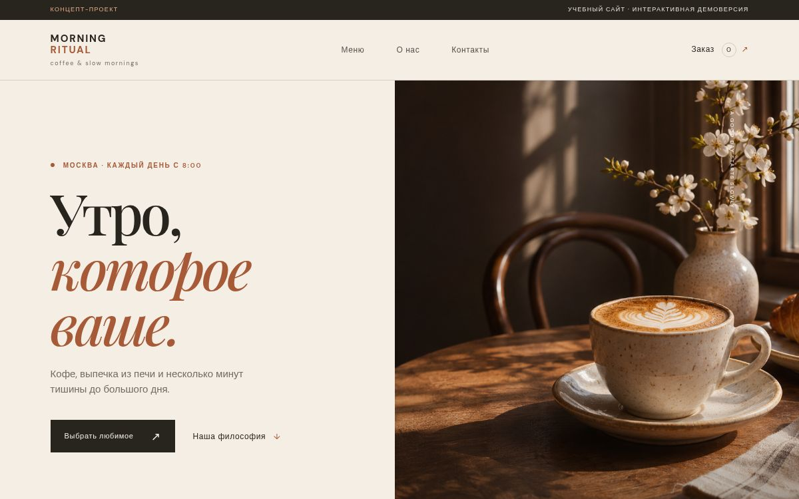

Понятный вход
С первого экрана видно предложение кофейни и есть прямой переход к меню.
Кейс 01 / сайт для кофейни / самостоятельный проект
Адаптивный сайт для вымышленной городской кофейни. В нём посетитель быстро находит меню, выбирает позиции и проходит демонстрационный путь заказа.

01 / Задача
Для кофейни сайт должен ответить на три простых вопроса: что здесь предлагают, сколько это стоит и как собрать заказ. Это проектная постановка задачи для самостоятельной работы, а не данные исследования реальных гостей.
С первого экрана видно предложение кофейни и есть прямой переход к меню.
Категории разделяют кофе, выпечку и сезонные позиции; цены находятся рядом с товарами.
Корзина показывает выбранные позиции и сумму перед переходом к форме.
02 / Решение
Страница ведёт от атмосферы бренда к конкретному действию. Интерактивные элементы помогают оценить заказ, не заставляя переходить на другой сайт.
03 / Дизайн-решения
Тёплая палитра и крупная типографика задают характер кофейни. Контрастные кнопки и единые карточки удерживают внимание на выборе.
Основная кнопка на первом экране ведёт к ассортименту, а не к отвлечённому разделу.
Фильтр помогает сузить выбор; карточка сразу показывает название, состав и цену.
Счётчик и итоговая сумма обновляются после добавления позиции.
Меню, карточки и корзина перестраиваются под узкие экраны.
04 / Результат и границы
Результат можно оценить в браузере: пройти от первого экрана до подтверждения демонстрационного заказа и проверить поведение на телефоне.
Егор Кузнецов / веб-дизайнер